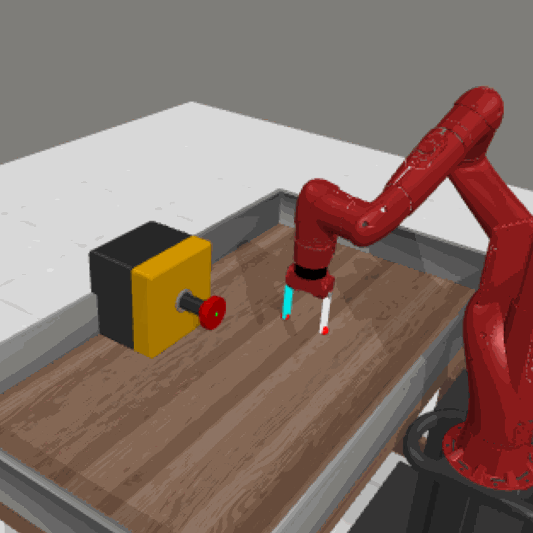
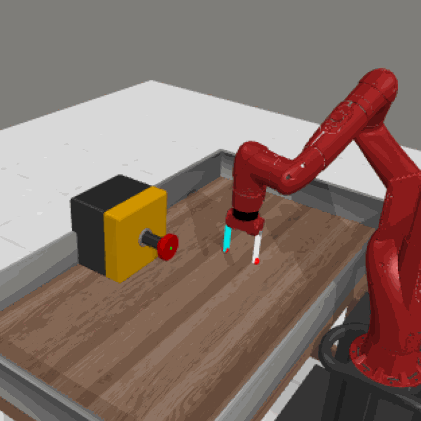
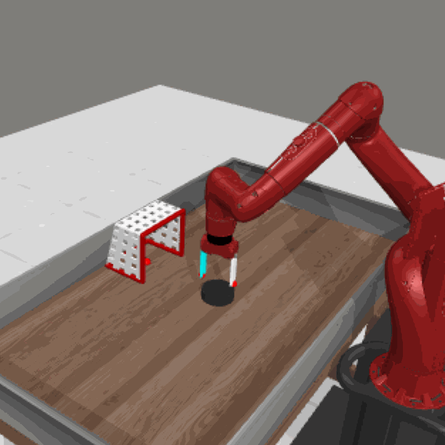
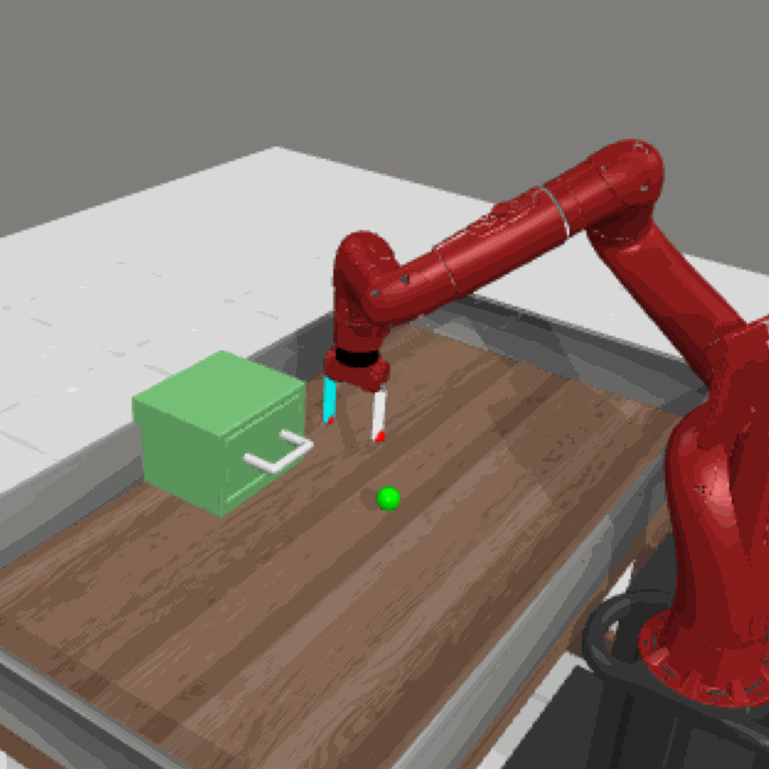
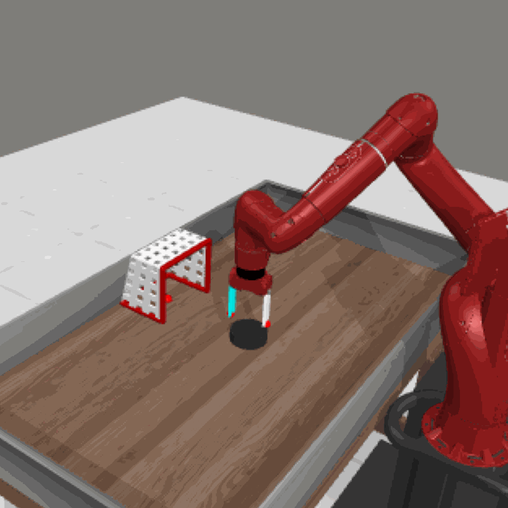
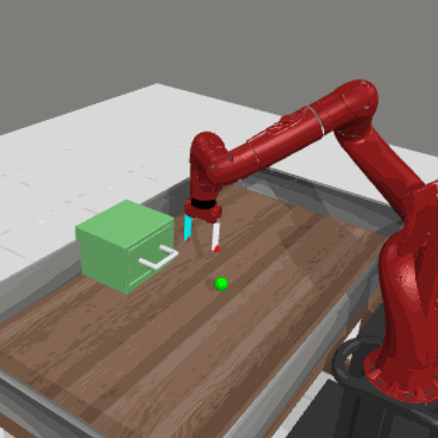
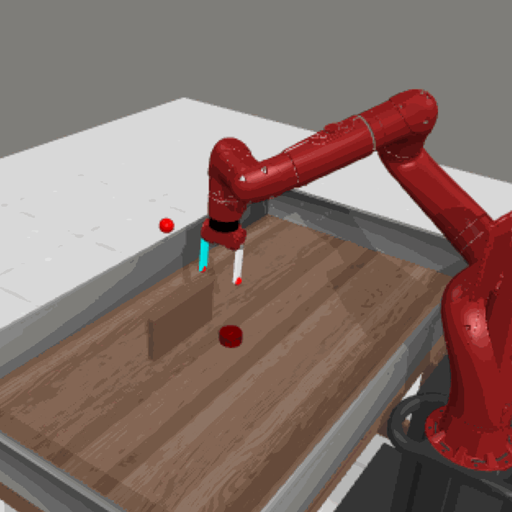
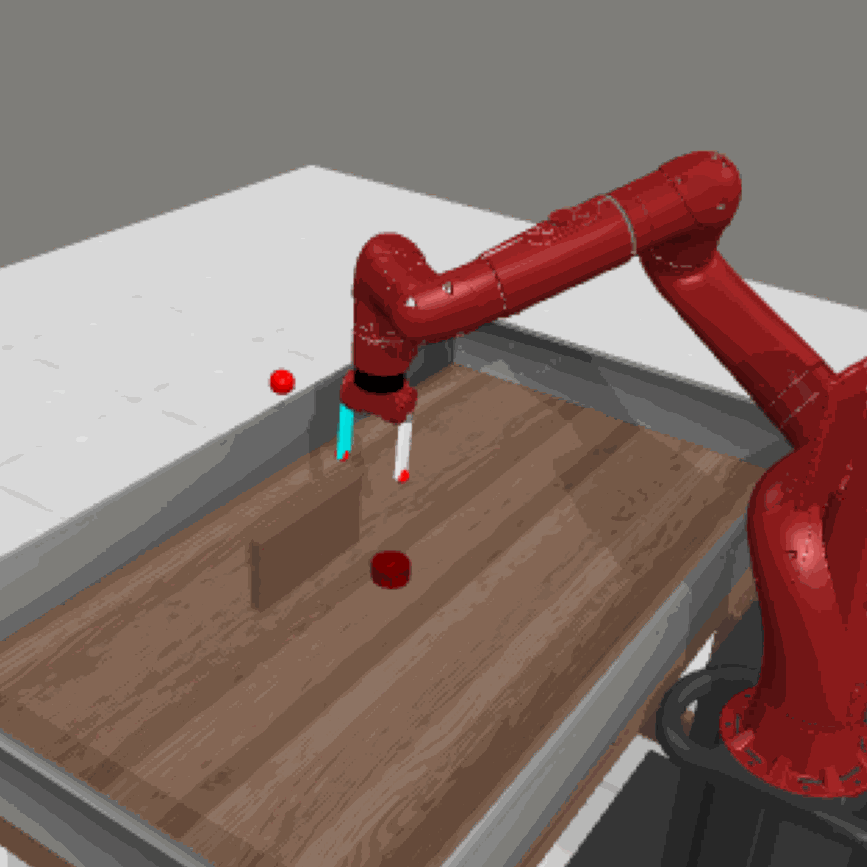
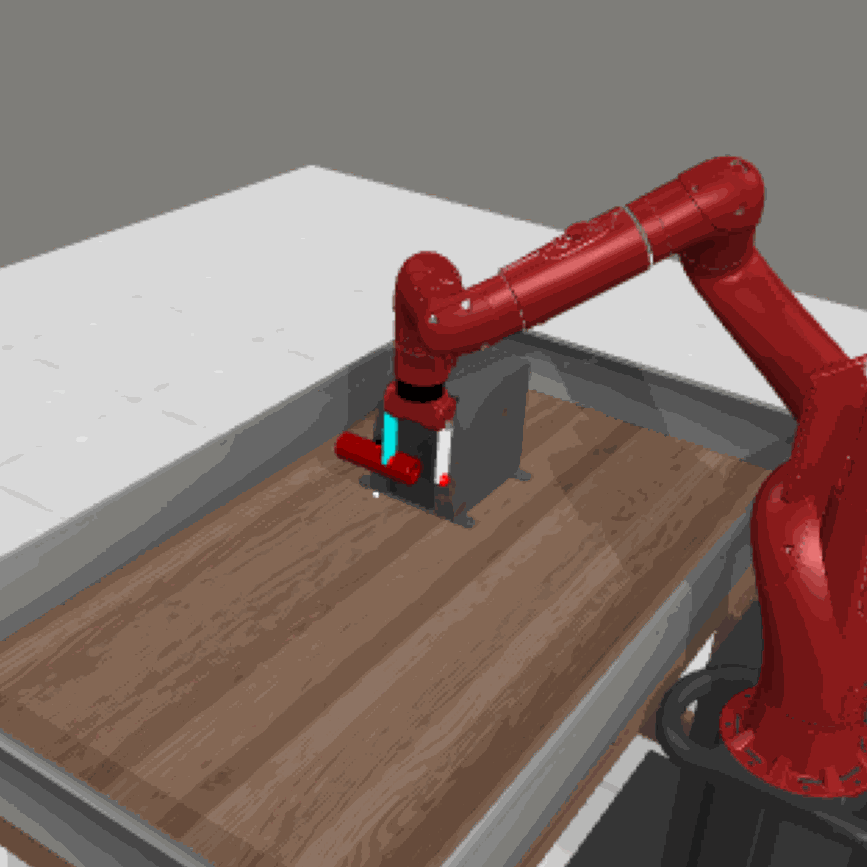
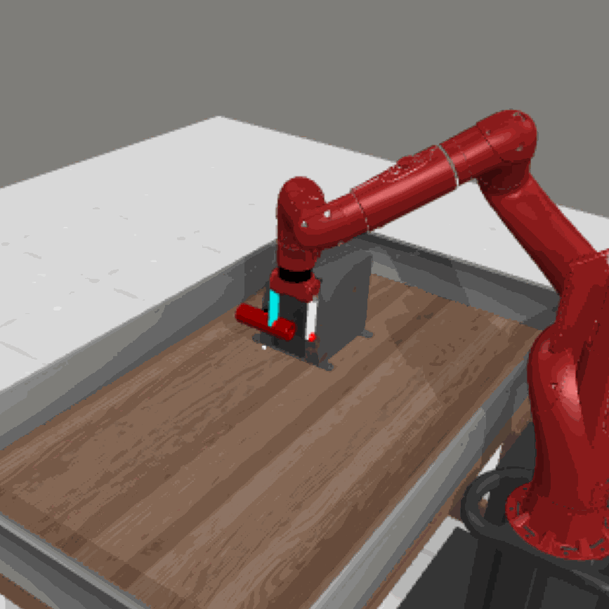

Can we generate a control policy for an agent using just one demonstration of desired behaviors as a prompt, as effortlessly as creating an image from a textual description?
In this paper, we present Make-An-Agent, a novel policy parameter generator that leverages the power of conditional diffusion models for behavior-to-policy generation.
Guided by behavior embeddings that encode trajectory information, our policy generator synthesizes latent parameter representations, which can then be decoded into policy networks.
Trained on policy network checkpoints and their corresponding trajectories, our generation model demonstrates remarkable versatility and scalability on multiple tasks and has a strong generalization ability on unseen tasks to output well-performed policies with only few-shot demonstrations as inputs. We showcase its efficacy and efficiency on various domains and tasks, including varying objectives, behaviors, and even across different robot manipulators. Beyond simulation, we directly deploy policies generated by Make-An-Agent onto real-world robots on locomotion tasks.


 


 





 

 
